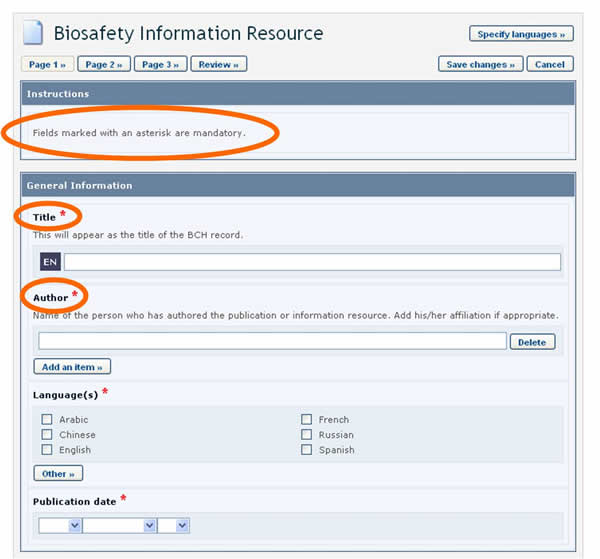

Todas las páginas de creación y/o edición de información a través del Centro de Gestión del CIISB utilizan un diseño estándar. Cuando usted registre información, navegará por páginas similares a las que muestra la siguiente figura.

Figura 13
Los componentes de la página de edición de registro son:
-
Tipo de registro: En la parte superior de la página aparece el tipo de registro que está editando, indicado con un ícono y la categoría de información. En el ejemplo, el documento que se está editando es un registro de contacto (Contact).
-
Solapas: Las solapas indican si está editando un documento individual, o si creó un nuevo documento que estará vinculado con el documento anterior. Por ejemplo, en la figura anterior, el usuario está editando un documento de contacto, mientras trabajaba originalmente en el documento de una Autoridad Nacional Competente (el registro del contacto quedará vinculado al registro de la Autoridad Nacional Competente).
-
Números de página: En las partes superior e inferior de la página de ingreso de datos aparecen los números de página. En algunos casos, el ingreso de datos se divide en múltiples páginas para que sea más fácil editar documentos largos.
-
Página de revisión: Luego de ingresar la información, debe pasar por una página de revisión, en la que se visualiza la información ingresada, tal como aparecerá en el documento. Si necesita cambiar algo, deberá seleccionar la página correspondiente, hacer los cambios y luego volver a la página de revisión.
-
Guardar cambios: Al hacer clic en este botón se abre una pantalla con la opción de publicar el documento o guardarlo como borrador. Si no quiere hacer ninguna de estas dos cosas, presione el botón de cancelar (Cancel).
-
Cancelar o borrar: Al hacer clic en este botón se abre una pantalla con la opción de cancelar los cambios que acaba de hacer y mantener la versión anterior del borrador (por ejemplo, si está editando un documento existente pero decide no hacer los cambios), o borrar totalmente el documento. Si no quiere hacer ninguna de estas dos cosas, presione el botón de cancelar (Cancel).
-
Seleccionar idiomas: Al hacer clic en este botón, se abre una pantalla que permite seleccionar los idiomas en los que usted desea ingresar la información en el documento que está editando. Marque el cuadro o cuadros correspondientes y haga clic en save selection para agregar a su documento los campos de idioma elegidos. Si no quiere cambiar los campos de idioma, presione el botón de cancelar (Cancel).